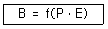
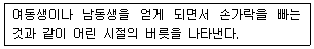
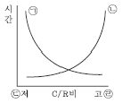
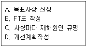
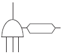
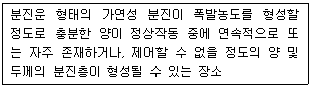
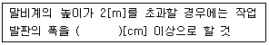
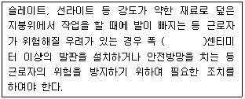
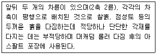

산업안전산업기사 (2017-03-05 기출문제)
1과목: 산업안전관리론
1. 억측판단의 배경이 아닌 것은?
- 생략행위
- 초조한 심정
- 희망적 관측
- 과거의 성공한 경험
(정답률: 74%)

2. 개인 카운슬링(Counseling)방법으로 가장 거리가 먼 것은?
- 직접적 충고
- 설득적 방법
- 설명적 방법
- 반복적 충고
(정답률: 74%)
3. 산업안전보건법령상 사업주가 근로자에 대하여 실시하여야 하는 교육 중 특별안전·보건교육의 대상이 되는 작업이 아닌 것은?
- 화학설비의 탱크 내 작업
- 전압이 30[V]인 정전 및 활선작업
- 건설용 리프트·곤돌라를 이용한 작업
- 동력에 의하여 작동되는 프레스기계를 5대 이상 보유한 사업장에서 해당 기계로 하는 작업
(정답률: 85%)
4. 조직이 리더에게 부여하는 권한으로 볼 수 없는 것은?
- 보상적 권한
- 강압적 권한
- 합법적 권한
- 위임된 권한
(정답률: 79%)
5. 인간의 행동 특성에 관한 레빈(Lewin)의 법칙에서 각 인자에 대한 내용으로 틀린 것은?

- B`:`행동
- f`:`함수관계
- P`:`개체
- E`:`기술
(정답률: 89%)
6. 무재해운동의 추진기법 중 위험예지훈련의 4라운드중 2라운드 진행방법에 해당하는 것은?
- 본질추구
- 목표설정
- 현상파악
- 대책수립
(정답률: 85%)
7. 허츠버그(Herzberg)의 동기·위생 이론에 대한 설명으로 옳은 것은?
- 위생요인은 직무내용에 관련된 요인이다.
- 동기요인은 직무에 만족을 느끼는 주요인이다.
- 위생요인은 매슬로우 욕구단계 중 존경, 자아실현의 욕구와 유사하다.
- 동기요인은 매슬로우 욕구단계 중 생리적 욕구와 유사하다.
(정답률: 70%)
8. 산업안전보건법령상 안전인증대상 기계·기구등이 아닌 것은?
- 프레스
- 전단기
- 롤러기
- 산업용 원심기
(정답률: 75%)
9. 다음과 같은 스트레스에 대한 반응은 무엇에 해당하는가?

- 투사
- 억압
- 승화
- 퇴행
(정답률: 84%)
10. 산업안전보건법령상 일용근로자의 안전·보건교육 과정별 교육시간 기준으로 틀린 것은?
- 채용 시의 교육 : 1시간 이상
- 작업내용 변경 시의 교육 : 2시간 이상
- 건설업 기초안전·보건교육(건설 일용근로자) : 4시간
- 특별교육 : 2시간 이상(흙막이 지보공의 보강 또는 동바리를 설치하거나 해체하는 작업에 종사하는 일용근로자)
(정답률: 63%)
11. 재해의 기본원인 4M에 해당하지 않는 것은?
- Man
- Machine
- Media
- Measurement
(정답률: 82%)
12. 연평균 근로자수가 1,000명인 사업장에서 연간 6건의 재해가 발생한 경우, 이 때의 도수율은?(단, 1일 근로시간수는 4시간, 연평균 근로일수는 150일이다.)
- 1
- 10
- 100
- 1,000
(정답률: 71%)
13. 재해의 원인과 결과를 연계하여 상호 관계를 파악하기 위해 도표화하는 분석방법은?
- 특성요인도
- 파레토도
- 크로스분류도
- 관리도
(정답률: 72%)
14. 적응기제(Adjustment Mechanism)의 도피적 행동인 고립에 해당하는 것은?
- 운동시합에서 진 선수가 컨디션이 좋지 않았다고 말한다.
- 키가 작은 사람이 키 큰 친구들과 같이 사진을 찍으려 하지 않는다.
- 자녀가 없는 여교사가 아동교육에 전념하게 되었다.
- 동생이 태어나자 형이 된 아이가 말을 더듬는다
(정답률: 85%)
15. 교육의 효과를 높이기 위하여 시청각 교재를 최대한으로 활용하는 시청각적 방법의 필요성이 아닌 것은?
- 교재의 구조화를 기할 수 있다.
- 대량 수업체재가 확립될 수 있다.
- 교수의 평준화를 기할 수 있다.
- 개인 차를 최대한으로 고려할 수 있다.
(정답률: 77%)
16. 무재해운동의 추진을 위한 3요소에 해당하지 않는 것은?
- 모든 위험잠재요인의 해결
- 최고경영자의 경영자세
- 관리감독자(Line)의 적극적 추진
- 직장 소집단의 자주활동 활성화
(정답률: 54%)
17. 산업안전보건법상 고용노동부장관이 산업재해 예방을 위하여 종합적인 개선조치를 할 필요가 있다고 인정할 때에 안전보건개선계획의 수립·시행을 명할 수 있는 대상 사업장이 아닌 것은?
- 산업재해율이 같은 업종 평균 산업재해율의 2배 이상인 사업장
- 직업병에 걸린 사람이 연간 2명 이상(상시 근로자 1천명 이상 사업자의 경우 3명 이상) 발생한 사업장
- 작업환경 불량, 화재·폭발 또는 누출사고 등으로 사회적 물의를 일으킨 사업장
- 경미한 재해가 다발로 발생한 사업장
(정답률: 77%)
18. 안전교육 훈련기법에 있어 태도 개발 측면에서 가장 적합한 기본교육 훈련방식은?
- 실습방식
- 제시방식
- 참가방식
- 시뮬레이션방식
(정답률: 61%)
19. 산업안전보건법령상 안전·보건표지에 관한 설명으로 틀린 것은?
- 안전·보건표지 속의 그림 또는 부호의 크기는 안전·보건표지의 크기와 비례하여야 하며, 안전·보건표지 전체 규격의 30[%] 이상이 되어야 한다.
- 안전·보건표지 색채의 물감은 변질되지 아니하는 것에 색채 고정원료를 배합하여 사용하여야 한다.
- 안전·보건표지는 그 표시내용을 근로자가 빠르고 쉽게 알아볼 수 있는 크기로 제작하여야 한다.
- 안전·보건표지에는 야광물질을 사용하여서는 아니된다.
(정답률: 86%)
20. 보호구 안전인증 고시에 따른 안전모의 일반 구조 중 턱끈의 최소 폭 기준은?
- 5[mm] 이상
- 7[mm] 이상
- 10[mm] 이상
- 12[mm] 이상
(정답률: 63%)
2과목: 인간공학 및 시스템안전공학
21. 산업안전보건법령에서 정한 물리적 인자의 분류 기준에 있어서 소음은 소음성난청을 유발할 수 있는 몇 dB(A) 이상의 시끄러운 소리로 규정하고 있는가?
- 70
- 85
- 100
- 115
(정답률: 74%)
22. 반복되는 사건이 많이 있는 경우에 FTA의 최소 컷셋을 구하는 알고리즘이 아닌 것은?
- Fussel Algorithm
- Boolean Algorithm
- Monte Carlo Algorithm
- Limnios & Ziani Algorithm
(정답률: 84%)
23. 다음 그림은 C/R비와 시간과의 관계를 나타낸 그림이다. ㉠~㉣에 들어갈 내용이 맞는 것은?

- ㉠ 이동시간 ㉡ 조정시간 ㉢ 민감 ㉣ 둔감
- ㉠ 이동시간 ㉡ 조정시간 ㉢ 둔감 ㉣ 민감
- ㉠ 조정시간 ㉡ 이동시간 ㉢ 민감 ㉣ 둔감
- ㉠ 조정시간 ㉡ 이동시간 ㉢ 둔감 ㉣ 민감
(정답률: 60%)
24. 인간공학에 관련된 설명으로 틀린 것은?
- 편리성, 쾌적성, 효율성을 높일 수 있다.
- 사고를 방지하고 안전성과 능률성을 높일 수 있다.
- 인간의 특성과 한계점을 고려하여 제품을 설계한다.
- 생산성을 높이기 위해 인간을 작업 특성에 맞추는 것이다.
(정답률: 75%)
25. 설비나 공법 등에서 나타날 위험에 대하여 정성적 또는 정량적인 평가를 행하고 그 평가에 따른 대책을 강구하는 것은?
- 설비보전
- 동작분석
- 안전계획
- 안전성 평가
(정답률: 69%)
26. 어떤 작업자의 배기량을 측정하였더니, 10분간 200[L]이었고, 배기량을 분석한 결과 O2 : 16[%], CO2 : 4[%]였다. 분당 산소 소비량은 약 얼마인가?
- 1.⑤L/분
- 2.⑤L/분
- 3.⑤L/분
- 4.⑤L/분
(정답률: 34%)
27. 작업장 내의 색채조절이 적합하지 못한 경우에 나타나는 상황이 아닌 것은?
- 안전표지가 너무 많아 눈에 거슬린다.
- 현란한 색배합으로 물체 식별이 어렵다.
- 무채색으로만 구성되어 중압감을 느낀다.
- 다양한 색채를 사용하면 작업의 집중도가 높아진다.
(정답률: 82%)
28. 산업안전보건법에서 규정하는 근골격계 부담작업의 범위에 해당하지 않는 것은?
- 단기간작업 또는 간헐적인 작업
- 하루에 10회 이상 25[kg] 이상의 물체를 드는 작업
- 하루에 총 2시간 이상 쪼그리고 앉거나 무릎을 굽힌 자세에서 이루어지는 작업
- 하루에 4시간 이상 집중적으로 자료입력 등을 위해 키보드 또는 마우스를 조작하는 작업
(정답률: 81%)
29. 인터페이스 설계 시 고려해야 하는 인간과 기계와의 조화성에 해당되지 않는 것은?
- 지적 조화성
- 신체적 조화성
- 감성적 조화성
- 심미적 조화성
(정답률: 73%)
30. 1[cd]의 점광원에서 1[m] 떨어진 곳에서의 조도가 3[lux]이었다. 동일한 조건에서 5[m] 떨어진 곳에서의 조도는 약 몇 [lux]인가?
- 0.12
- 0.22
- 0.36
- 0.56
(정답률: 49%)
31. 위험처리 방법에 관한 설명으로 틀린 것은?
- 위험처리 대책 수립 시 비용문제는 제외된다.
- 재정적으로 처리하는 방법에는 보류와 전가방법이 있다.
- 위험의 제어 방법에는 회피, 손실제어, 위험분리, 책임 전가 등이 있다.
- 위험처리 방법에는 위험을 제어하는 방법과 재정적으로 처리하는 방법이 있다.
(정답률: 77%)
32. 인간의 가청주파수 범위는?
- 2~10,000[Hz]
- 20~20,000[Hz]
- 200~30,000[Hz]
- 200~40,000[Hz]
(정답률: 77%)
33. FTA에 의한 재해사례 연구의 순서를 올바르게 나열한 것은?

- A→B→C→D
- A→C→B→D
- B→C→A→D
- B→A→C→D
(정답률: 76%)
34. 모든 시스템 안전 프로그램 중 최초 단계의 분석으로 시스템 내의 위험요소가 어떤 상태에 있는지를 정성적으로 평가하는 방법은?
- CA
- FHA
- PHA
- FMEA
(정답률: 69%)
35. 청각적 표시장치에서 300[m] 이상의 장거리용 경보기에 사용하는 진동수로 가장 적절한 것은?
- 800[Hz] 전후
- 2,200[Hz] 전후
- 3,500[Hz] 전후
- 4,000[Hz] 전후
(정답률: 62%)
36. 인간-기계 체계에서 인간의 과오에 기인된 원인 확률을 분석하여 위험성의 예측과 개선을 위한 평가 기법은?
- PHA
- FMEA
- THERP
- MORT
(정답률: 78%)
37. 기능식 생산에서 유연생산 시스템 설비의 가장 적합한 배치는?
- 합류(Y)형 배치
- 유자(U)형 배치
- 일자(一)형 배치
- 복수라인(二)형 배치
(정답률: 78%)
38. 지게차 인장벨트의 수명은 평균이 100,000시간, 표준편차가 500시간인 정규분포를 따른다. 이 인장벨트의 수명이 101,000시간 이상일 확률은 약 얼마인가?(단, P(Z≤1)=0.8413, P(Z≤2)=0.9772, P(Z≤3)=0.9987이다.)
- 1.60[%]
- 2.28[%]
- 3.28[%]
- 4.28[%]
(정답률: 56%)
39. FT도에 사용되는 다음 기호의 명칭으로 맞는 것은?

- 억제게이트
- 부정 게이트
- 배타적 OR 게이트
- 우선적 AND 게이트
(정답률: 72%)
40. 인체계측 자료에서 주로 사용하는 변수가 아닌 것은?
- 평균
- 5백분위수
- 최빈값
- 95백분위수
(정답률: 70%)
3과목: 기계위험방지기술
41. 선반 등으로부터 돌출하여 회전하고 있는 가공물이 근로자에게 위험을 미칠 우려가 있는 경우 설치할 방호 장치로 가장 적합한 것은?
- 덮개 또는 울
- 슬리브
- 건널다리
- 체인 블록
(정답률: 82%)
42. 금형 운반에 대한 안전수칙에 관한 설명으로 옳지 않은 것은?
- 상부금형과 하부금형이 닿을 위험이 있을 때는 고정 패드를 이용한 스트랩, 금속재질이나 우레탄 고무의 블록 등을 사용한다.
- 금형을 안전하게 취급하기 위해 아이볼트를 사용할 때는 숄더형으로 사용하는 것이 좋다.
- 관통 아이볼트가 사용될 때는 조립이 쉽도록 구멍 틈새를 크게 한다.
- 운반하기 위해 꼭 들어 올려야 할 때에는 필요한 높이 이상으로 들어 올려서는 안된다.
(정답률: 83%)
43. 지게차의 안정도 기준으로 틀린 것은?
- 기준부하상태에서 주행시의 전후 안정도는 8[%] 이내이다.
- 하역작업시의 좌우안정도는 최대하중상태에서 포크를 가장 높이 올리고 마스트를 가장 뒤로 기울인 상태에서 6[%] 이내이다.
- 하역작업시의 전후안정도는 최대하중상태에서 포크를 가장 높이 올린 경우 4[%] 이내이며, 5톤 이상은 3.5[%] 이내이다.
- 기준무부하상태에서 주행시의 좌우안정도는 (15+1.1×V)[%] 이내이고, V는 구내최고속도(km/h)를 의미한다.
(정답률: 53%)
44. 기계설비 구조의 안전을 위해 설계 시 고려하여야 할 안전계수(safety factor)의 산출 공식으로 틀린 것은?
- 파괴강도÷허용응력
- 안전하중÷파단하중
- 파괴하중÷허용하중
- 극한강도÷최대설계응력
(정답률: 57%)
45. 산업용 로봇의 재해 발생에 대한 주된 원인이며, 본체의 외부에 조립되어 인간의 팔에 해당되는 기능을 하는 것은?
- 센서(sensor)
- 제어 로직(control logic)
- 제동장치(brake system)
- 매니퓰레이터(manipulator)
(정답률: 81%)
46. 방호장치의 안전기준상 평면연삭기 또는 절단연삭기에서 덮개의 노출각도 기준으로 옳은 것은?
- 80° 이내
- 125° 이내
- 150° 이내
- 180° 이내
(정답률: 48%)
47. 광전자식 방호장치가 설치된 프레스에서 손이 광선을 차단했을 때부터 급정지기구가 작동을 개시할 때까지의 시간은 0.3초, 급정지기구가 작동을 개시했을 때부터 슬라이드가 정지할 때까지의 시간이 0.4초 걸린다고 할 때 최소 안전거리는 약 몇 [mm]인가?
- 540
- 760
- 980
- 1120
(정답률: 51%)
48. 안전한 상태를 확보할 수 있도록 기계의 작동부분 상호간을 기계적, 전기적인 방법으로 연결하여 기계가 정상 작동을 하기 위한 모든 조건이 충족되어야지만 작동하며, 그중 하나라도 충족되지 않으면 자동적으로 정지시키는 방호장치 형식은?
- 자동식 방호장치
- 가변식 방호장치
- 고정식 방호장치
- 인터록식 방호장치
(정답률: 73%)
49. 다음 중 목재가공용 둥근톱에 설치해야 하는 분할날의 두께에 관한 설명으로 옳은 것은?
- 톱날 두께의 1.1배 이상이고, 톱날의 치진폭보다 커야 한다.
- 톱날 두께의 1.1배 이상이고, 톱날의 치진폭보다 작아야 한다.
- 톱날 두께의 1.1배 이내이고, 톱날의 치진폭보다 커야 한다.
- 톱날 두께의 1.1배 이내이고, 톱날의 치진폭보다 작아야 한다.
(정답률: 63%)
50. 기계를 구성하는 요소에서 피로현상은 안전과 밀접한 관련이 있다. 다음 중 기계요소의 피로파괴현상과 가장 관련이 적은 것은?
- 소음(noise)
- 노치(notch)
- 부식(corrosion)
- 치수 효과(size effect)
(정답률: 63%)
51. 드릴링 머신의 드릴지름이 10[mm]이고, 드릴회전수가 1,000[rpm]일때 원주속도는 약 얼마인가?
- 3.14[m/min]
- 6.28[m/min]
- 31.4[m/min]
- 62.8[m/min]
(정답률: 74%)
52. 롤러기의 방호장치 중 복부조작식 급정지 장치의 설치위치 기준에 해당하는 것은?(단, 위치는 급정지장치의 조작부의 중심점을 기준으로 한다.)
- 밑면에서 1.8[m] 이상
- 밑면에서 0.8[m] 미만
- 밑면에서 0.8[m] 이상 1.1[m] 이내
- 밑면에서 0.4[m] 이상 0.8[m] 이내
(정답률: 80%)
53. 산업안전보건법령상 크레인의 직동식 권과 방지장치는 훅·버킷 등 달기구의 윗면이 드럼, 상부 도르래 등 권상 장치의 아랫면과 접촉할 우려가 있을 때 그 간격이 얼마 이상이어야 하는가?
- 0.01[m] 이상
- 0.02[m] 이상
- 0.03[m] 이상
- 0.⑤[m] 이상
(정답률: 35%)
54. 원심기의 안전대책에 관한 사항에 해당되지 않는 것은?
- 최고사용회전수를 초과하여 사용해서는 아니된다.
- 내용물이 튀어나오는 것을 방지하도록 덮개를 설치하여야 한다.
- 폭발을 방지하도록 압력방출장치를 2개 이상 설치하여야 한다.
- 청소, 검사, 수리 등의 작업 시에는 기계의 운전을 정지하여야 한다.
(정답률: 83%)
55. 산업안전보건법령상 고속회전체의 회전시험을 하는 경우 미리 회전축의 재질 및 형상 등에 상응하는 종류의 비파괴검사를 해서 결함 유무(有無)를 확인하여야 하는 고속 회전체 대상은?
- 회전축의 중량이 0.5톤을 초과하고, 원주속도가 15[m/s] 이상인 것
- 회전축의 중량이 1톤을 초과하고, 원주속도가 30[m/s] 이상인 것
- 회전축의 중량이 0.5톤을 초과하고, 원주소도가 60[m/s] 이상인 것
- 회전축의 중량이 1톤을 초과하고, 원주속도가 120[m/s] 이상인 것
(정답률: 66%)
56. 롤러기의 급정지장치를 작동시켰을 경우에 무부하 운전 시 앞면 롤러의 표면속도가 30[m/min] 미만일 때의 급정지거리로 적합한 것은?
- 앞면 롤러 원주의 1/1.5 이내
- 앞면 롤러 원주의 1/2 이내
- 앞면 롤러 원주의 1/2.5 이내
- 앞면 롤러 원주의 1/3 이내
(정답률: 64%)
57. 위험기계·기구 자율안전 확인고시에 의하면 탁상용 연삭기에서 연삭숫돌의 외주면과 가공물 받침대 사이 거리는 몇 [mm]를 초과하지 않아야 하는가?
- 1
- 2
- 4
- 8
(정답률: 40%)
58. 지게차의 헤드가드 상부틀에 있어서 각 개구부의 폭 또는 길이의 크기는?
- 8[cm] 미만
- 10[cm] 미만
- 16[cm] 미만
- 20[cm] 미만
(정답률: 61%)
59. 탁상용 연삭기의 평형 플랜지 바깥지름이 150[mm]일 때, 숫돌의 바깥지름은 몇 [mm] 이내이어야 하는가?
- 300[mm]
- 450[mm]
- 600[mm]
- 750[mm]
(정답률: 72%)
60. 기계운동 형태에 따른 위험점 분류에 해당되지 않는 것은?
- 접선끼임점
- 회전말림점
- 물림점
- 절단점
(정답률: 59%)
4과목: 전기 및 화학설비위험방지기술
61. 교류아크 용접기의 재해방지를 위해 쓰이는 것은?
- 자동전격방지 장치
- 리미트 스위치
- 정전압 장치
- 정전류 장치
(정답률: 76%)
62. 방폭구조의 종류와 기호가 잘못 연결된 것은?
- 유입방폭구조-o
- 압력방폭구조-p
- 내압방폭구조-d
- 본질안전방폭구조-e
(정답률: 71%)
63. 전기화재의 직접적인 발생요인과 가장 거리가 먼 것은?
- 피뢰기의 손상
- 누전, 열의 축적
- 과전류 및 절연의 손상
- 지락 및 접속불량으로 인한 과열
(정답률: 74%)
64. 콘덴서의 단자전압이 1[kV], 정전용량이 740[pF]일 경우 방전에너지는 약 몇 [mJ]인가?
- 370
- 37
- 3.7
- 0.37
(정답률: 41%)
65. 이온생성 방법에 따라 정전기 제전기의 종류가 아닌 것은?
- 고전압인가식
- 접지제어식
- 자기방전식
- 방사선식
(정답률: 44%)
66. 송전선의 경우 복도체 방식으로 송전하는데 이는 어떤 방전 손실을 줄이기 위한 것인가?
- 코로나방전
- 평등방전
- 불꽃방전
- 자기방전
(정답률: 73%)
67. 누전차단기의 설치 환경조건에 관한 설명으로 틀린 것은?
- 전원전압은 정격전압의 85 ~ 110[%] 범위로 한다.
- 설치장소가 직사광선을 받을 경우 차폐시설을 설치한다.
- 정격부동작 전류가 정격감도 전류의 30% 이상이어야하고 이들의 차가 가능한 큰 것이 좋다.
- 정격전부하전류가 30[A]인 이동형 전기기계·기구에 접속되어 있는 경우 일반적으로 정격감도 전류는 30[mA] 이하인 것을 사용한다.
(정답률: 69%)
68. 피뢰설비 기본 용어에 있어 외부 뇌보호 시스템에 해당되지 않는 구성요소는?
- 수뢰부
- 인하도선
- 접지시스템
- 등전위 본딩
(정답률: 59%)
69. 누전에 의한 감전위험을 방지하기 위하여 누전차단기를 설치하여야 하는데 다음 중 누전차단기를 설치하지 않아도 되는 것은?
- 절연대 위에서 사용하는 이중 절연구조의 전동기기
- 임시배선의 전로가 설치되는 장소에서 사용하는 이동형 전기기구
- 철판 위와 같이 도전성이 높은 장소에서 사용하는 이동형 전기기구
- 물과 같이 도전성이 높은 액체에 의한 습윤장소에서 사용하는 이동형 전기기구
(정답률: 74%)
70. 위험장소의 분류에 있어 다음 설명에 해당되는 것은?

- 20종 장소
- 21종 장소
- 22종 장소
- 23종 장소
(정답률: 61%)
71. 프로판(C3H8) 가스의 공기 중 완전연소 조성농도는 약 몇 [vol%]인가?
- 2.02
- 3.02
- 4.02
- 5.02
(정답률: 51%)
72. 산업안전보건법령에서 정한 위험물질의 종류에서 “물반응성 물질 및 인화성 고체”에 해당하는 것은?
- 니트로화합물
- 과염소산
- 아조화합물
- 칼륨
(정답률: 76%)
73. 화재 발생시 알코올포(내알코올포) 소화약제의 소화 효과가 큰 대상물은?
- 특수인화물
- 물과 친화력이 있는 수용성 용매
- 인화점이 영하 이하의 인화성 물질
- 발생하는 증기가 공기보다 무거운 인화성 액체
(정답률: 59%)
74. 다음 중 화학물질 및 물리적 인자의 노출기준에 따른 TWA노출기준이 가장 낮은 물질은?
- 불소
- 아세톤
- 니트로벤젠
- 사염화탄소
(정답률: 54%)
75. 다음 중 폭발한계의 범위가 가장 넓은 가스는?
- 수소
- 메탄
- 프로판
- 아세틸렌
(정답률: 67%)
76. 20[℃], 1기압의 공기를 압축비 3으로 단열 압축하였을 때 온도는 약 몇 [℃]가 되겠는가?(단, 공기의 비열비는 1.4이다.)
- 84
- 128
- 182
- 1091
(정답률: 48%)
77. 대기 중에 대량의 가연성 가스가 유출되거나 대량의 가연성 액체가 유출하여 그것으로부터 발생하는 증기가 공기와 혼합해서 가연성 혼합기체를 형성하고, 점화원에 의하여 발생하는 폭발을 무엇이라 하는가?
- UVCE
- BLEVE
- Detonation
- Boil over
(정답률: 56%)
78. 가스를 저장하는 가스용기의 색상이 틀린 것은?(단, 의료용 가스는 제외한다.)
- 암모니아-백색
- 이산화탄소-황색
- 산소-녹색
- 수소-주황색
(정답률: 53%)
79. 여러 가지 성분의 액체 혼합물을 각 성분별로 분리하고자 할 때 비점의 차이를 이용하여 분리하는 화학설비를 무엇이라 하는가?
- 건조기
- 반응기
- 진공관
- 증류탑
(정답률: 77%)
80. 산업안전보건법령에서 정한 안전검사의 주기에 따르면 건조설비 및 그 부속설비는 사업장에 설치가 끝난 날부터 몇 년 이내에 최초 안전검사를 실시하여야 하는가?(관련 규정 개정전 문제로 여기서는 기존 정답인 3번을 누르면 정답 처리됩니다. 자세한 내용은 해설을 참고하세요.)
- 1
- 2
- 3
- 4
(정답률: 61%)
5과목: 건설안전기술
81. 작업으로 인하여 물체가 떨어지거나 날아올 위험이 있는 경우 설치하는 낙하물 방지망의 수평면과의 각도 기준으로 옳은 것은?
- 10[°] 이상 20[°] 이하를 유지
- 20[°] 이상 30[°] 이하를 유지
- 30[°] 이상 40[°] 이하를 유지
- 40[°] 이상 45[°] 이하를 유지
(정답률: 71%)
82. 굴착공사 중 암질변화구간 및 이상암질 출현시에는 암질판별시험을 수행하는데 이 시험의 기준과 거리가 먼 것은?
- 함수비
- R.Q.D
- 탄성파속도
- 일축압축강도
(정답률: 52%)
83. 거푸집동바리등을 조립하거나 해체하는 작업을 하는 경우 준수사항으로 옳지 않은 것은?
- 해당 작업을 하는 구역에는 관계 근로자가 아닌 사람의 출입을 금지할 것
- 비, 눈, 그 밖의 기상상태의 불안정으로 날씨가 몹시 나쁜 경우에는 그 작업을 중지할 것
- 낙하·충격에 의한 돌발적 재해를 방지하기 위하여 버팀목을 설치하고 거푸집동바리등을 인양장비에 매단 후에 작업을 하도록 하는 등 필요한 조치를 할 것
- 재료, 기구 또는 공구 등을 올리거나 내리는 경우에는 근로자로 하여금 달줄·달포대 등의 사용을 금지하도록 할 것
(정답률: 73%)
84. 고소작업대가 갖추어야 할 설치조건으로 옳지 않은 것은?
- 작업대를 와이어로프 또는 체인으로 올리거나 내릴 경우에는 와이어로프 또는 체인이 끊어져 작업대가 떨어지지 아니하는 구여여야 하며, 와이어로프 또는 체인의 안전율은 3 이상일 것
- 작업대를 유압에 의해 올리거나 내릴 경우에는 작업대를 일정한 위치에 유지할 수 있는 장치를 갖추고 압력의 이상저하를 방지할 수 있는 구조일 것
- 작업대에 정격하중(안전율 5 이상)을 표시할 것
- 작업대에 끼임·충돌 등 재해를 예방하기 위한 가드 또는 과상승방지장치를 설치할 것
(정답률: 70%)
85. 굴착작업을 하는 경우 지반의 붕괴 또는 토석의 낙하에 의한 근로자의 위험을 방지하기 위하여 관리감독자로 하여금 작업시작 전에 점검하도록 해야 하는 사항과 가장 거리가 먼 것은?
- 부석·균열의 유무
- 함수·용수
- 동결상태의 변화
- 시계의 상태
(정답률: 69%)
86. 크레인을 사용하여 작업을 하는 경우 준수해야 할 사항으로 옳지 않은 것은?
- 인양할 하물(荷物)을 바닥에서 끌어당기거나 밀어 정위치 작업을 할 것
- 유류드럼이나 가스통 등 운반 도중에 떨어져 폭발하거나 누출될 가능성이 있는 위험물 용기는 보관함(또는 보관고)에 담아 안전하게 매달아 운반할 것
- 미리 근로자의 출입을 통제하여 인양 중인 하물이 작업자의 머리 위로 통과하지 않도록 할 것
- 인양할 하물이 보이지 아니하는 경우에는 어떠한 동작도 하지 아니할 것(신호하는 사람에 의하여 작업을 하는 경우는 제외한다.)
(정답률: 77%)
87. 이동식비계를 조립하여 작업을 하는 경우의 준수사항으로 옳지 않은 것은?
- 이동식비계의 바퀴에는 뜻밖의 갑작스러운 이동 또는 전도를 방지하기 위하여 브레이크·쐐기 등으로 바퀴를 고정시킨 다음 비계의 일부를 견고한 시설물에 고정하거나 아웃트리거(outrigger)를 설치하는 등 필요한 조치를 할 것
- 작업발판은 항상 수평을 유지하고 작업발판위에서 안전난간을 딛고 작업을 하지 않도록 하며, 대신 받침대 또는 사다리를 사용하여 작업할 것
- 비계의 최상부에서 작업을 하는 경우에는 안전난간을 설치할 것
- 작업발판의 최대적재하중은 250[kg]을 초과하지 않도록 할것
(정답률: 51%)
88. 다음은 산업안전보건법령에 따른 말비계를 조립하여 사용하는 경우에 관한 준수사항이다. ( )안에 알맞은 숫자는?

- 10
- 20
- 30
- 40
(정답률: 68%)
89. 아스팔트 포장도로의 노반의 파쇄 또는 토사 중에 있는 암석제거에 가장 적당한 장비는?
- 스크레이퍼(Scraper)
- 롤러(Roller)
- 리퍼(Ripper)
- 드래그라인(Dragline)
(정답률: 69%)
90. 통나무 비계를 건축물, 공작물 등의 건조·해체 및 조립 등의 작업에 사용하기 위한 지상 높이 기준은?
- 2층 이하 또는 6[m] 이하
- 3층 이하 또는 9[m] 이하
- 4층 이하 또는 12[m] 이하
- 5층 이하 또는 15[m] 이하
(정답률: 55%)
91. 다음은 산업안전보건법령에 따른 지붕 위에서의 위험 방지에 관한 사항이다. ( )안에 알맞은 것은?

- 20
- 25
- 30
- 40
(정답률: 73%)
92. 버팀대(Strut)의 축하중 변화상태를 측정하는 계측기는?
- 경사계(Inclino meter)
- 수위계(Water level meter)
- 침하계(Extension)
- 하중계(Load cell)
(정답률: 75%)
93. 추락방지망의 방망 지지점은 최소 얼마 이상의 외력에 견딜 수 있는 강도를 보유하여야 하는가?
- 500[kg]
- 600[kg]
- 700[kg]
- 800[kg]
(정답률: 55%)
94. 다음에서 설명하고 있는 건설장비의 종류는?

- 클램쉘
- 탠덤 롤러
- 트랙터 셔블
- 드래그 라인
(정답률: 73%)
95. 건설업 산업안전보건관리비의 안전시설비로 사용가능하지 않은 항목은?
- 비계·통로·계단에 추가 설치하는 추락방지용 안전난간
- 공사수행에 필요한 안전통로
- 틀비계에 별도로 설치하는 안전난간·사다리
- 통로의 낙하물 방호선반
(정답률: 54%)
96. 건설업에서 사업주의 유해·위험방지 계획서 제출 대상 사업장이 아닌 것은?
- 지상 높이가 31[m] 이상인 건축물의 건설, 개조 또는 해체공사
- 연면적 5,000[m2] 이상 관광숙박시설의 해체공사
- 저수용량 5,000톤 이하의 지방상수도 전용 댐 건설 등의 공사
- 깊이 10[m] 이상인 굴착공사
(정답률: 63%)
97. 안전방망을 건축물의 바깥쪽으로 설치하는 경우 벽면으로부터 망의 내민 길이는 최소 얼마 이상이어야 하는가?
- 2[m]
- 3[m]
- 5[m]
- 10[m]
(정답률: 47%)
98. 터널 지보공을 설치한 경우에 수시로 점검하여야 할 사항에 해당하지 않는 것은?
- 기둥침하의 유무 및 상태
- 부재의 긴압 정도
- 매설물 등의 유무 또는 상태
- 부재의 접속부 및 교차부의 상태
(정답률: 58%)
99. 콘크리트 타설작업을 하는 경우에 준수해야 할 사항으로 옳지 않은 것은?
- 당일의 작업을 시작하기 전에 해당 작업에 관한 거푸집동바리 등의 변형·변위 및 지반의 침하 유무 등을 점검하고 이상이 있으면 보수할 것
- 작업 중에는 거푸집동바리 등의 변형·변위 및 침하 유무 등을 감시할 수 있는 감시자를 배치하여 이상이 있으면 작업을 중지하고 근로자를 대피시킬 것
- 설계도서상의 콘크리트 양생기간을 준수하여 거푸집동바리등을 해체할 것
- 콘크리트를 타설하는 경우에는 편심을 유발하여 한쪽 부분부터 밀실하게 타설되도록 유도할 것
(정답률: 80%)
100. 철골공사에서 나타나는 용접결함의 종류에 해당하지 않는 것은?
- 가우징(gouging)
- 오버랩(overlap)
- 언더 컷(under cut)
- 블로우 홀(bolw hole)
(정답률: 62%)